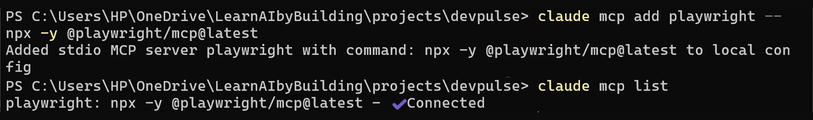
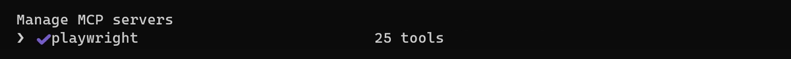
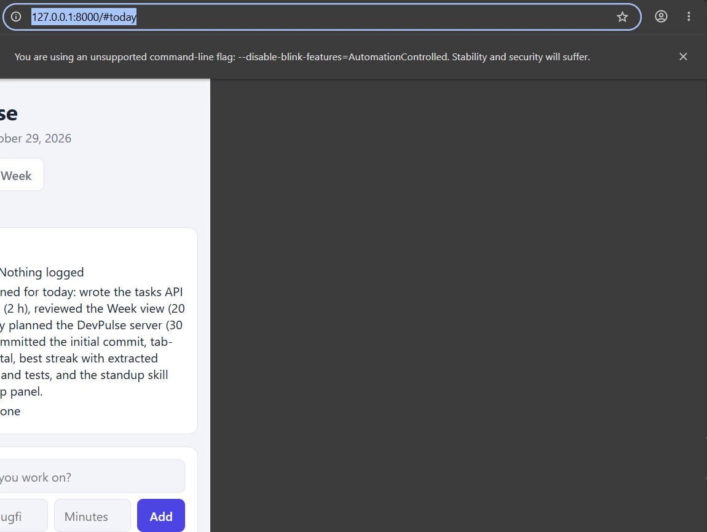
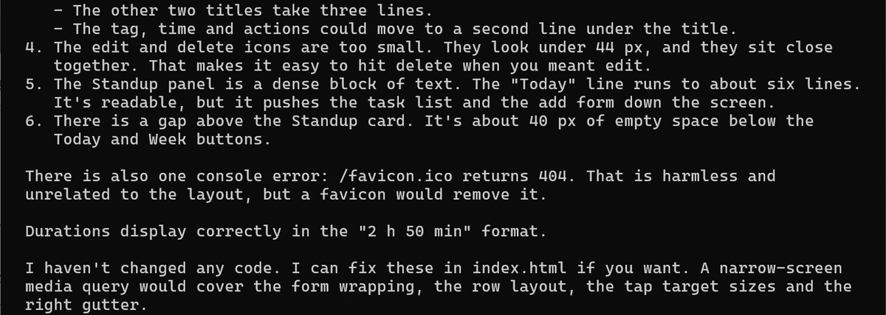
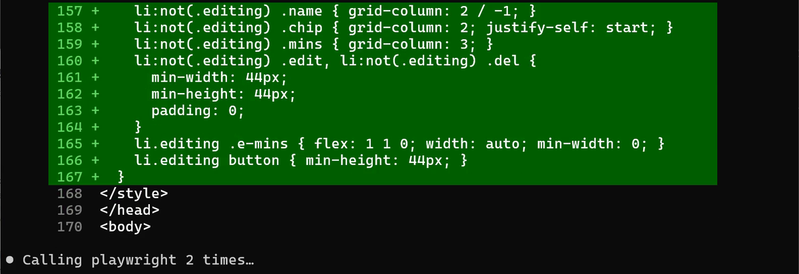
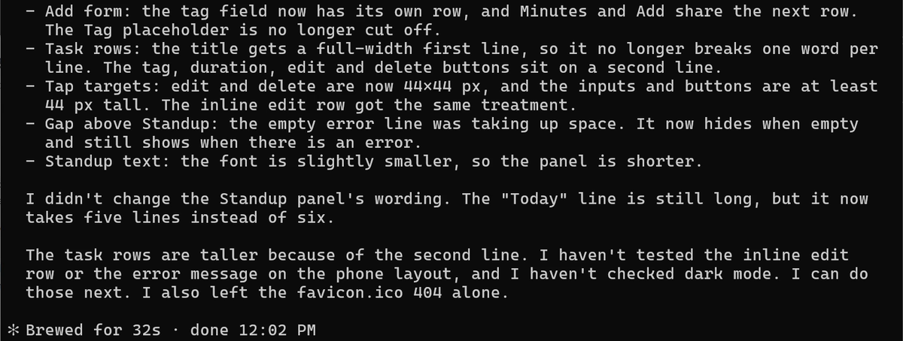
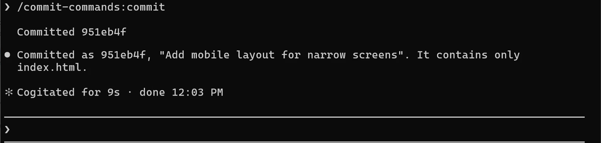
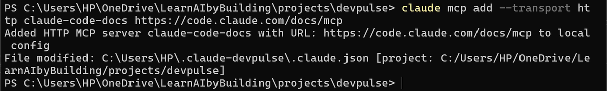
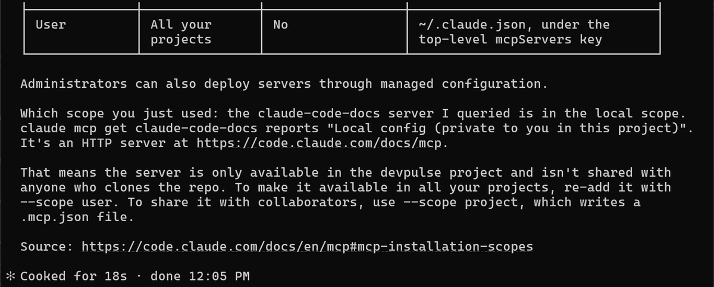

npx, so you need Node.js.Claude has never seen your page
Most people will open a page like DevPulse on a phone. Does it look right there?
Claude wrote most of that page. But it only ever read the code. It has never opened the page, and it has never seen it 390 px wide.
How do you let Claude look at the running app, not just the code?
Give Claude a browser
Claude Code talks to outside tools through MCP servers. MCP is an open standard: one server, many tools. Playwright's server gives Claude a real Chrome to drive.
Add it from your terminal, not inside Claude.
The same two lines work in PowerShell and in the Mac Terminal. On Windows we did not need cmd /c in front.

-- is the command that starts the server. list starts it once to check: Connected.Now start claude and type /mcp.

Let Claude look at the page


Fix it, then look again


Now see it yourself. Narrow your own browser window.
/commit-commands:commit.
A second server: the docs
Some servers are not programs on your computer. They live on the web. Anthropic runs one for the Claude Code docs. Exit Claude with /exit first.

Start claude again and ask it about that.

| Scope | Who gets the server | How to add it |
|---|---|---|
| Local | You, in this project only | The default |
| Project | Everyone who clones the repo, through .mcp.json | --scope project |
| User | You, in all your projects | --scope user |
An MCP server runs with your permissions. Add only servers you trust, the same way you would install a program.
What a server costs
Every connected server adds its tool list to Claude's context. Playwright alone has 25 tools. Keep the servers you use, and remove the rest with claude mcp remove name.
These servers were built by others. What if DevPulse had its own tools for Claude? That is chapter 11.
Quick reference
The prompts from this chapter, ready to copy: every prompt, chapter 10.
| Command or key | What it does | Use it when |
|---|---|---|
claude mcp add name -- command | Adds a server that runs on your computer (stdio) | The tool is a program you can start, like Playwright |
claude mcp add --transport http name url | Adds a server that lives on the web | The tool has a web address, like the docs server |
claude mcp list | Lists your servers and whether they connect | You want to check a server works |
/mcp | Shows the servers inside Claude Code, with their tools | You want to see what Claude can use right now |
Use the playwright tools to … | Claude opens a real browser and looks | You want Claude to see the page, not just the code |
--scope user / --scope project | Makes a server yours everywhere, or shared with the repo | Local scope is too narrow |
Let Claude look at a page of your own
The goal: Claude checks a page by seeing it, not by reading it.
The steps: add Playwright to one of your own projects. Ask Claude: Use the playwright tools to open … at 390 px and tell me what looks wrong. Then ask it to fix one problem and check again.
Guess first: will Claude find more problems from the screenshot, or from reading the code?
One question for you: which server would your team want in project scope?
References
Where each command on this page comes from. Every screenshot is from our own recording on 29 Oct 2026, Claude Code 2.1.312.
- Anthropic · Connect Claude Code to tools via MCP claude mcp add, list and get; stdio and HTTP servers; the local, project and user scopes; /mcp. https://code.claude.com/docs/en/mcp
- Microsoft · Playwright MCP The browser server we added: open a page, resize it, take a screenshot. https://github.com/microsoft/playwright-mcp
- Model Context Protocol · Introduction What MCP is: one open way for an AI app to talk to tools and data. https://modelcontextprotocol.io/introduction
- My own recording · 29 Oct 2026, Windows 11 Claude found 6 phone problems in 19 seconds, fixed them in 32, and the docs server named the scope we used.
New chapters and episodes come out every week. Follow along on YouTube or the WhatsApp channel.